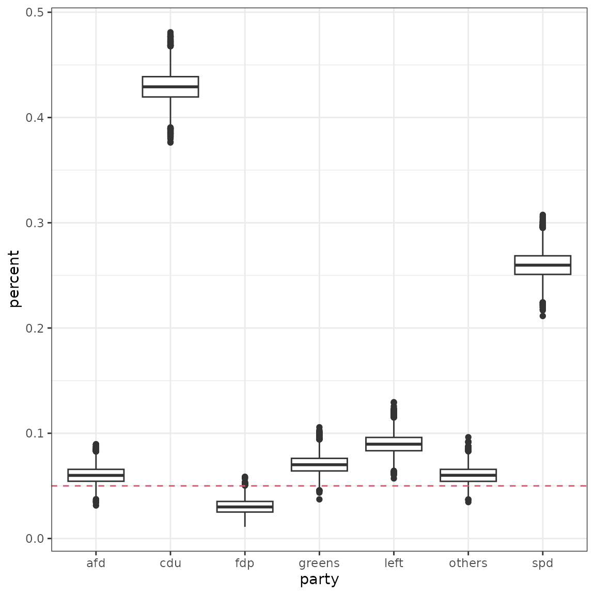
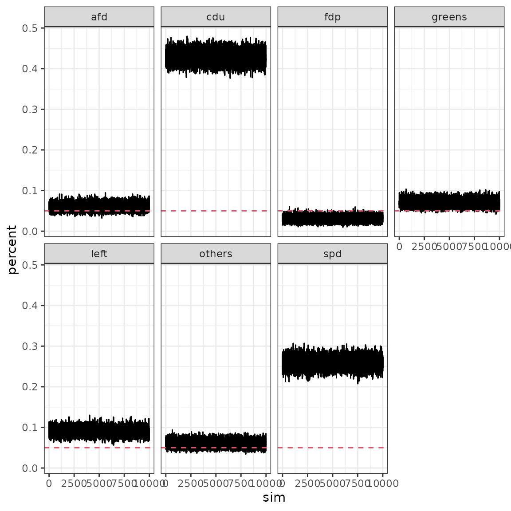

library(tidyr)
library(purrr)
library(dplyr)
library(coalitions)
library(ggplot2)
theme_set(theme_bw())
# load latest emnid data
temp <- scrape_wahlrecht() %>% slice(1) %>% collapse_parties()
temp %>% unnest("survey")## # A tibble: 7 × 7
## date start end respondents party percent votes
## <date> <date> <date> <dbl> <chr> <dbl> <dbl>
## 1 2013-09-29 2013-09-24 2013-09-26 1382 cdu 43 594.
## 2 2013-09-29 2013-09-24 2013-09-26 1382 spd 26 359.
## 3 2013-09-29 2013-09-24 2013-09-26 1382 greens 7 96.7
## 4 2013-09-29 2013-09-24 2013-09-26 1382 fdp 3 41.5
## 5 2013-09-29 2013-09-24 2013-09-26 1382 left 9 124.
## 6 2013-09-29 2013-09-24 2013-09-26 1382 afd 6 82.9
## 7 2013-09-29 2013-09-24 2013-09-26 1382 others 6 82.9
# draw 10k samples from posterior
set.seed(29072017)
draws <- map(temp$survey, draw_from_posterior, nsim=1e4, correction=0.01) %>%
bind_rows()
draws_long <- pivot_longer(draws, cols = everything(),
names_to = "party", values_to = "percent") %>%
group_by(party) %>%
mutate(sim = row_number()) %>% ungroup()
ggplot(draws_long, aes(x=party, y=percent)) +
geom_boxplot() +
geom_hline(yintercept = 0.05, lty=2, col=2)
## chains
ggplot(draws_long, aes(x=sim, y=percent)) +
geom_path() +
geom_hline(yintercept = 0.05, lty=2, col=2) +
facet_wrap(~party, nrow=2)
## # A tibble: 7 × 2
## party entryprob
## <chr> <dbl>
## 1 afd 0.892
## 2 cdu 1
## 3 fdp 0.0029
## 4 greens 0.994
## 5 left 1
## 6 others 0.892
## 7 spd 1